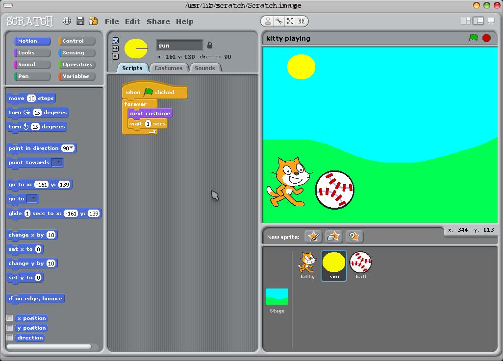

Warsztaty dla dzieci w wieku

Uczestnictwo rodziców nie jest wymagane.
Code.org
Opis tematyczny
Podczas tego warsztatu uczestnicy poznają podstawy tego czym jest zabawa związana z programowaniem. Uczestnicy za pomocą odpowiednich bloków będą rozwiązywać łamigłówki które pomogą im ostatecznie w stworzenie własnej gry która później będą mogli się pochwalić swoim znajomym.
Wartość merytoryczna
Poznanie w jaki sposob pracuje komputer oraz odkrycie jakie możliwości daje zabawa z komputerem w której wykorzystujemy kreatywność i dziecięcą ciekawość.
Wymagania
Umiejętności układania puzzli. Odrobina cierpliwości z domieszką ciekawości i chęć współpracy przy dobrej zabawie.
Materiały pomocnicze
Brak
Więcej
Scratch
Opis tematyczny
Na zajęciach zajmiemy się utworzeniem prostej gry zręcznościowej bazujacej na wcześniej przygotowanych grafikach. Poza ogólnymi wytycznymi będzie możliwość indywidualnego doboru grafiki (tło, postacie). Dzieci, które wykonają zadanie przed czasem będą mogły zmodyfikować grę zgodnie ze swoją inwencją i możliwościami
Wygląd aplikacji

Wartość merytoryczna
Nauka abstrakcyjnego myślenia, nauka zależności przyczynowo-skutkowych, matematyka w zakresie dodawania, podstawy programowania (zmienne warunki. Dla zaawansowanych pętle.
Wymagania
Znajomość podstawowych pojęć matematycznych oraz szybkiego dodawnania w zakresu 0-100. Wymaga się także, aby każdy uczestnik przynajmniej raz w życiu zagrał w dowolną, prostą grę zręcznościową na komputerze – w końcu będziemy pisać własną i takie doświadczenie może być bardzo przydatne
Materiały pomocnicze
Brak
Więcej
Lego® WeDo + Scratch
Opis tematyczny
CityCAMP WeDo to niezwykłe zajęcia, na których dzieci uczą się budować nowoczesne maszyny, poznając przy tym zasady ich działania i odkrywając fascynujący świat nauki.
W czasie zajęć wykorzystamy zestawy edukacyjnych klocków LEGO WeDo, za pomocą których dzieci budują i programują modele złożonych maszyn, które zmieniły otaczający nas świat. Oprócz nauki robotyki, dzieci poszerzają swoją wiedzę z zakresu fizyki i mechaniki.
Środowiskiem programistycznym używanym w czasie zajęć jest Scratch.
{kind=link}
Wartość merytoryczna
W czasie konferencji zbudujemy batyskaf, przy pomocy którego opowiemy jak działają i czym są roboty, oraz w jaki sposób są wykorzystywane do eksploracji świata. Dzieci zapoznają się podstawowymi definicjami, takimi jak: robot, silnik, czujnik, prąd elektryczny, program, polecenie programistyczne, algorytm, pętla programistyczna, polecenie warunkowe, środowisko programistyczne, język programowania.
Wymagania
- ukończone 8 lat
- umiejętność czytania i pisania
- umiejętność dodawani i odejmowania w zakresie 20
- podstawowa obsługa komputera
Materiały pomocnicze
- Komputer
- Zestaw edukacyjny LEGO WeDo
- Środowisko programistyczne SCRATCH
- E-learning RoboCAMP